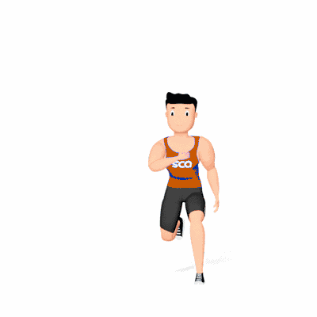

Salto Lateral

Exercício pliométrico que fortalece quadríceps, glúteos, posteriores e panturrilhas, além de melhorar potência, equilíbrio e coordenação. Indicado para praticantes de todos os níveis que buscam ganhos de força e explosão muscular.
Ficha Técnica
Tipo: Funcional
Grupo Muscular: Perna
Aparelho: Nenhum
Músculos: Nenhum
Como realizar
- Fique em pé com pés afastados na largura dos ombros e joelhos semiflexionados;
- Salte lateralmente para um dos lados, apoiando-se na perna de aterrissagem;
- Flexione levemente o joelho para absorver o impacto, mantendo o tronco ereto;
- Imediatamente salte para o lado oposto, repetindo o movimento contínuo;
- Mantenha abdome contraído e respiração controlada durante a execução.
 RC STORE
RC STORE